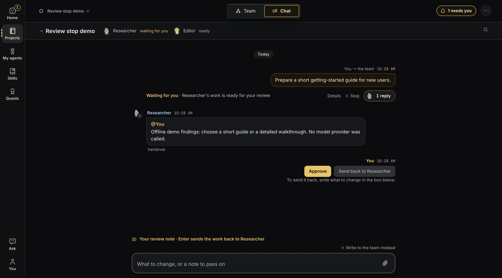
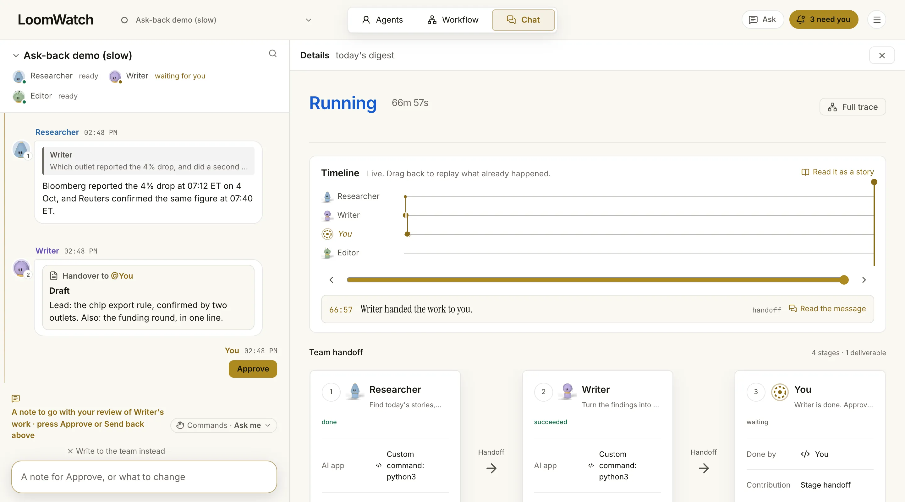

Check AI work before the next agent uses it.
When AI agents pass work along, one weak step quietly shapes everything after it. LoomWatch puts you in the line: the team stops, shows you what it has so far, and waits until you decide.
Add a review stop
In a team's Workflow tab, add You (review step) between two agents and connect it like any other step. In its What to check box, write what you want to look at, such as "Are the sources real, and is anything missing?" Add as many stops as you like.
Or start from the ready-made team Research, your approval, then writing, which already has one. A stop works on a schedule too: a team that runs every morning still waits for you.
When the team stops for you
The handover waits in the team's chat, with two buttons under it. The bell at the top of LoomWatch tells you, on any screen, when something needs you.
- Approve passes the work on. Type a note first and the button says Approve with your note: your note goes on with the work, as your direction.
- Send back: write what should change and send it back. The agent revises it and asks you again.


Nothing moves on until you decide. LoomWatch's own helper, Ask, can draft a note for you, but only you click Approve or Send back.
Agents ask before they act
Each agent has three switches under Allowed without asking: Search the web, Edit files (only in its own folder) and Run commands. They start off, except web search for researchers.
For anything it isn't allowed, the agent stops and asks in the chat, such as "Asks to use the web". You answer right below it: Allow, Allow for this run, Allow for the whole team, Always allow or Deny. When it asks to run a command, you can change the command before it runs, or answer in its place so nothing runs at all.
A tool you connected, such as Todoist or Linear, works in your own account there, so the agent asks before each action it takes, even one that only reads. The question names the tool, the action and what it would send. Always allow this lets that one action through for that agent from then on, and its other actions still ask. Its Tools it can use block lists what it always may do, with a × to take each back.
If nobody answers within 10 minutes, the request is declined. A scheduled run declines straight away, because nobody is watching. The run's receipt says what an agent couldn't do, so you can allow it next time.
Fewer questions, with Auto
Switch the team to Auto beside the chat's message box. A command then runs without asking when it only reads, in the agent's own folder or the folders and files you gave it, or when it only downloads something for an agent allowed the web. Anything that deletes, publishes, needs administrator rights or touches passwords and keys still asks every time, and so does every action in a tool you connected. LoomWatch decides this on your computer, from the command itself.
On Windows, commands an agent runs are not walled off from the rest of your computer: an agent you let run commands can change any of your files. Leave Run commands off unless you need it.
See what really happened
Every message, every tool an agent used, every file it touched and every handover is recorded on your computer. Click Details beside the chat to see each step, and drag the timeline back to replay what happened, and when.
Each run ends with a receipt: how it ended, what it used and what it cost. A skill counts as read only when the agent really read it. Nothing is guessed from a title.
Redo just one step
To change one agent's work, write @ and its name in the chat, with what should change. Under its new version, Continue with the team runs the steps after it, so you don't start over.